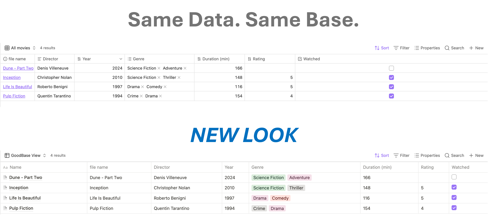
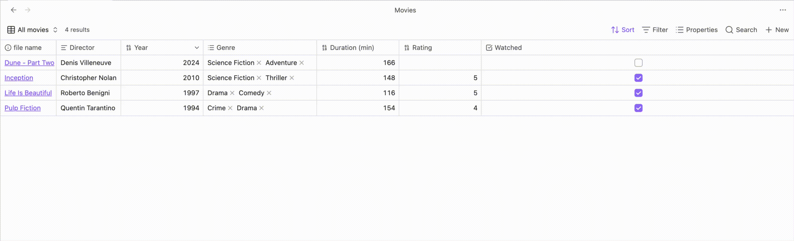

Notion-style tables
for Obsidian Bases
GoodBases is a free, open-source plugin that renders your Obsidian Bases as Notion-style databases — clean chrome, colored pills, hover actions, and inline editing. Your notes stay yours; only the look changes.

Features
Notion-fidelity chrome
System font stack, hairline borders, row hover wash, and a horizontal scroll container so columns never crush — even in embeds and reading mode.
Colored value pills
Tags and list properties render with Notion's 9-color select palette. A deterministic hash keeps each value's color stable forever — or pin your own per value.
Inline cell editing
Click a cell to edit text and numbers in a floating input; checkboxes toggle in place. Pill cells open a select menu with every known value, search, and create-on-Enter.
Hover-reveal OPEN button
Hover a row to reveal an OPEN button that jumps to the note, just like Notion's database rows.
Grouping support
Respects the Bases group by configuration, with Notion-style group headers and counts.
View options
Wrap cell content, toggle vertical lines, force properties to render as pills, and pin pill colors — all from the view's settings menu.
Demo

Install
- Make sure you're on Obsidian 1.10.2+ with the Bases core plugin enabled.
- Download
main.js,manifest.json, andstyles.cssfrom the latest release. - Put them in
VaultRoot/.obsidian/plugins/good-bases/. - Reload Obsidian and enable GoodBases in Settings → Community plugins.
- In any Base, open the view selector and pick Notion-style table.
Support
GoodBases is built and maintained in my spare time, and it will always be free. If it makes your vault a little nicer to work in, a coffee goes toward new features — column resizing, calculated footers, editable tags — and keeping up with Obsidian's API changes.
☕ Buy me a coffee